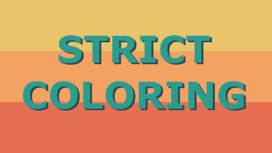
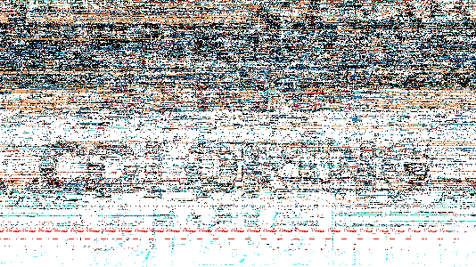
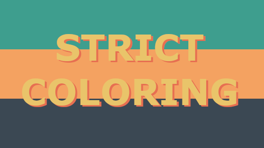
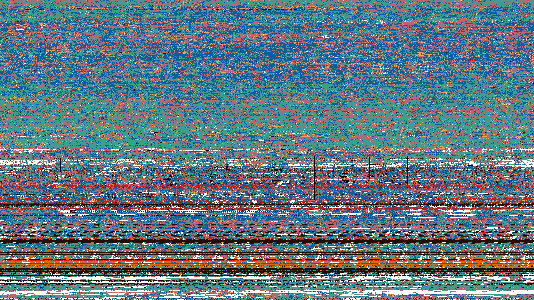

#Genuary2021
January 23rd
Prompt
#264653 #2a9d8f #e9c46a #f4a261 #e76f51, no gradients.
Interpretation
Using the given colors I created to plingo-programs/images of the same structure but with a different rotation of colors. This way we can see how different inputs create different results.
The outputs below show the input to the left and the final image (iteration 121) to the right.
 
 